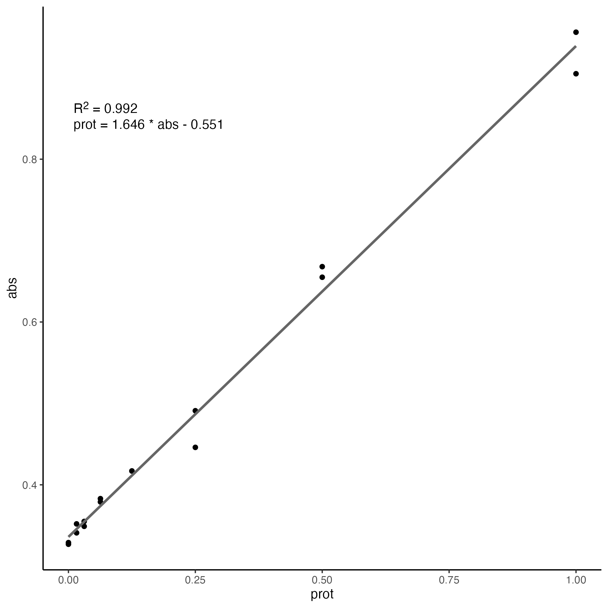

And some even more content below it hopefully in the form of blog posts.
This is a post with executable code.
This is the first post in a Quarto blog. Welcome!
using Plots Plots.plot(1:10, randn(10))

A common experiment in any kind of lab is the creation of a standard curve to measure the concentration or amount of some unknown sample. Whether they be proteins, small molecules or anything in between, it’s a standard lab procedure.